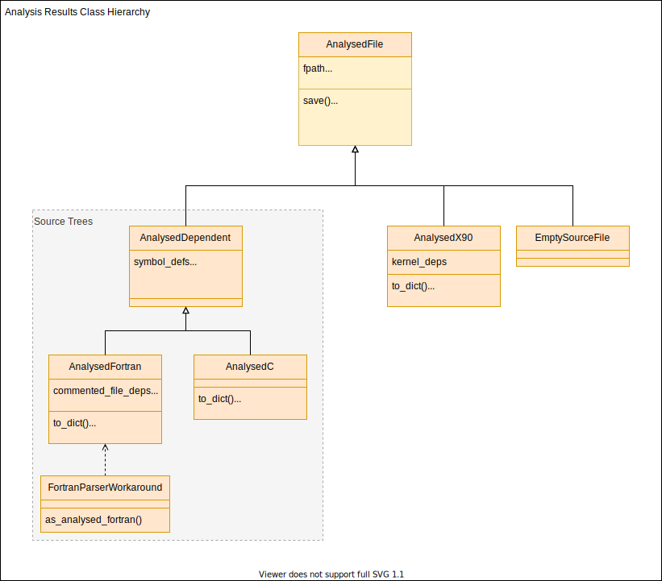

Developer’s guide#
Interested in developing Fab? Here are some resources to help you on your way.
Install from source#
The following commands will checkout the latest version of the code and create an editable install.
This lets you edit the code without needing to reinstall fab after every change.
$ git clone https://github.com/metomi/fab.git <fab-folder>
$ pip install -e <fab-folder>
You can install extra features by using [test], [docs], [features] or [dev], as defined in setup.py.
$ pip install -e <fab-folder>[dev]
Source code Analysis#
The class hierarchy for analysis results can be seen below. See
analyse for a description of the analysis process.
Classes which are involved in source tree analysis contain symbol definitions and dependencies, and the file dependencies into which they are converted.
{kind=link}
Incremental & Prebuilds#
See Incremental Build and Prebuild for definitions.
Prebuilt artefacts are stored in a flat _prebuild folder underneath the build_output folder. They include a checksum in their filename to distinguish between different builds of the same artefact. All prebuild files are named: <stem>.<hash>.<suffix>, e.g: my_mod.123.o.
Checksums#
Fab inserts a checksum in the names of prebuild files. This checksum is derived from everything which should trigger a rebuild if changed. Before an artefact is created, Fab will calculate the checksum and search for an existing artefact so it can avoid reprocessing the inputs.
Analysis results#
Analysis results are stored in files with a .an suffix. The checksum in the filename is solely the hash of the analysed source file. Note: this can change with different preprocessor flags.
Fortran module files#
When creating a module file from a Fortran source file, the prebuild checksum is created from hashes of:
source file
compiler
compiler version
Fortran object files#
When creating an object file from a Fortran source file, the prebuild checksum is created from hashes of:
source file
compiler
compiler version
compiler flags
modules on which the source depends
Running the tests#
You’ll need to install from source, and a full [dev] install to get the testing dependencies.
Unit and system tests#
From the fab folder, type:
$ pytest tests/unit_tests
$ pytest tests/system_tests
Flake8 and mypy#
When making a PR, you might want to run all the checks which give us green
ticks. You can see the commands we run in .github/workflows/build.yml.
To run flake8 and mypy, type:
$ flake8 .
$ mypy setup.py source tests
Github Actions#
Various workflows are maintained by the project.
Testing a PR#
The github action defined in .github/workflows/build.yml automatically runs
the unit and system tests, plus flake8 and mypy, and adds green ticks to pull
requests.
Build these docs#
The github action to build the docs is defined in
.github/workflows/build_docs.yml. It is manually triggered and can be run
from any branch in the metomi repo.
You can also run it on your fork to produce a separate build, for viewing work in progress.
Version numbering#
We use a PEP 440 compliant
semantic versioning, of the form {major}.{minor}.{patch}[{a|b|rc}N]
0.9.5
1.0.0a1
1.0.0a2
1.0.0b1
1.0.0rc1
1.0.0
1.0.1
1.1.0a1
Dev versions are not for release and cover multiple commits. * 1.0.dev0 * … * 1.0.0 * 1.0.dev1 * … * 1.0.1
The version number is defined in source/fab/__init_.py.
Developing at the Met Office#
There are special notes for developers working at the Met Office.